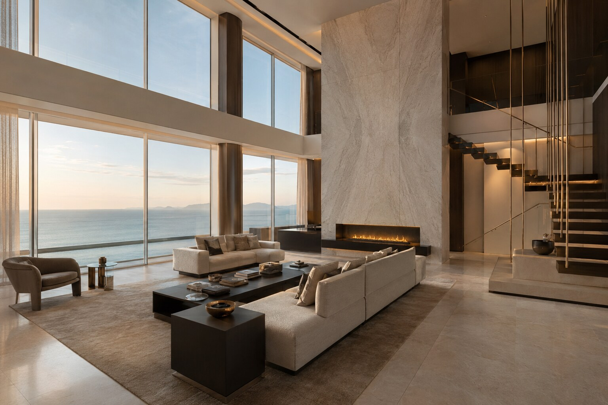
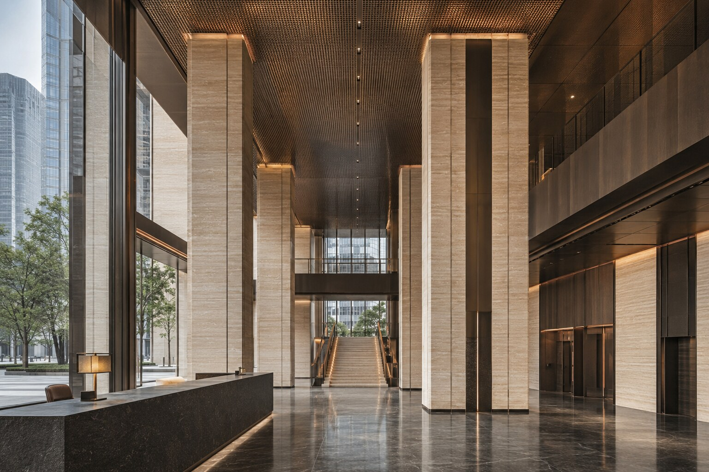

YISO / 01
YISO / 0101RESIDENTIAL
마리나 듀플렉스 펜트하우스MARINA DUPLEX PENTHOUSE
복층의 구조감과 항구 조망, 월넛과 대리석의 차분한 재료감을 하나의 언어로 완성한 하이엔드 레지던스.
HOSPITALITY · RESIDENTIAL · COMMERCIAL
WORKPLACE · CULTURE · PUBLIC
YISO SELECTED PORTFOLIO
BUSAN, SOUTH KOREA
ALL SPACES
YISO / 0101RESIDENTIAL
복층의 구조감과 항구 조망, 월넛과 대리석의 차분한 재료감을 하나의 언어로 완성한 하이엔드 레지던스.
 YISO / 02
YISO / 0202HOSPITALITY
그랜드 로비부터 라운지와 다이닝까지 석재와 브론즈의 일관된 디테일로 환대의 경험을 설계한 호텔.
 YISO / 03
YISO / 0303ARCHITECTURE
해안의 수평선과 두 개의 건축 매스, 깊은 처마와 소나무 조경을 연결한 대형 리조트.

YISO / 0404RESIDENTIAL
은빛 트래버틴과 브론즈, 바다의 빛으로 완성한 랜드마크 타워의 초대형 레지던스.
 YISO / 05
YISO / 0505HOSPITALITY
현지 화강석과 짙은 목재, 안개 낀 소나무 숲의 장면을 연결한 대형 산악 리조트.
 YISO / 06
YISO / 0606PUBLIC
대형 연회장과 오디토리움, 항구 전망 포이어를 하나의 공공 동선으로 연결한 복합시설.
 YISO / 07
YISO / 0707WORKPLACE
다층 아트리움과 실내 정원, 보드룸과 타운홀을 연결한 대규모 프리미엄 기업 본사.
 YISO / 08
YISO / 0808COMMERCIAL
세 개 층의 리테일과 전시, 프라이빗 살롱을 조형 계단으로 엮은 글로벌 플래그십.
 YISO / 09
YISO / 0909HEALTHCARE
진료와 테라피, 회복의 전 과정을 정원과 수공간으로 연결한 대형 통합 웰니스 센터.
 YISO / 10
YISO / 1010CULTURE
노출콘크리트 매스와 투명한 아트리움으로 항구에 열린 공공 문화의 장면을 만든 미술관.
 YISO / 11
YISO / 1111HOSPITALITY
그랜드 로비와 800석 연회장, 다이닝과 스위트를 하나의 재료 언어로 완성한 5성급 호텔.
 YISO / 12
YISO / 1212HOSPITALITY
복층 라운지와 다이닝, 이벤트 홀을 넓은 테라스로 연결한 대형 프라이빗 마리나 클럽.
 YISO / 13
YISO / 1313PUBLIC
5개 층의 서가와 계단식 열람 공간, 정원과 커뮤니티 시설을 품은 대형 시민도서관.
 YISO / 14
YISO / 1414COMMERCIAL
벽돌 산업 유산 안에 푸드홀과 다이닝, 베이커리와 200석 컬리너리 극장을 담은 복합공간.

YISO / 1515WORKPLACE
랜드마크 타워의 공공 로비와 컨퍼런스, 이그제큐티브 업무층을 아우르는 대형 금융 본사.
START A PROJECT WITH YISO